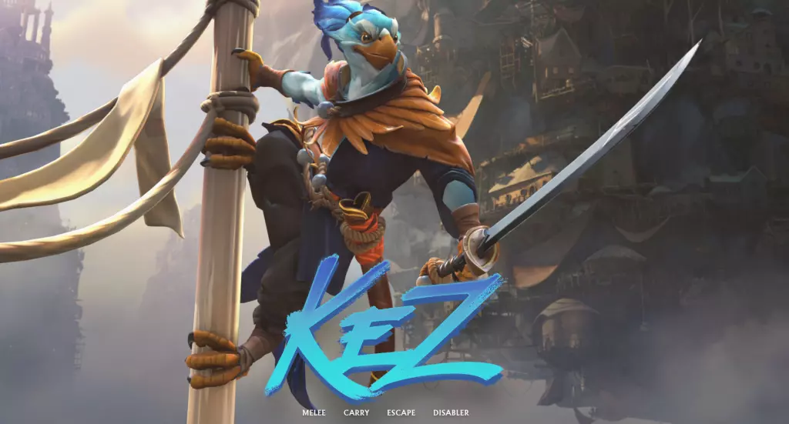

latest hero releases
kez
Kez is a Dota 2 hero with two distinct weapon sets, each offering a unique set of abilities. When wielding the Kazurai Katana, Kez excels in powerful, precise attacks with increased damage output and special effects. In contrast, the Shodo Sai emphasizes speed, allowing Kez to make rapid, swift strikes with abilities that focus on mobility and crowd control. Each weapon set alters both his abilities and attack effects, making Kez a versatile hero who can switch between offensive power and quick, agile tactics depending on the situation.
Release date: NOVEMBER 8, 2024
ringmaster
The Ringmaster is a versatile support hero in Dota 2, using circus-themed abilities to control the battlefield. With crowd control, area damage, and utility, they summon creatures and create chaos, disrupting enemies while aiding their team. Unpredictable and dynamic, the Ringmaster excels at manipulating fights with flair and strategy.
Release date: AUGUST 23, 2024